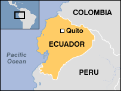

Ecuador

General Information: Forty percent of the people of Ecuador are full-blood Indian; many are descendants of the Incas. Another 40% are Mestizo, a mixture of Indian and Spanish. Protestants have been working in this country for a little over 100 years. Our work began in 1993. The Church of God in Ecuador currently has twenty congregations, four are with the Cayambe Indians, and several cell groups meeting in other parts of the country.
Latest Trip to Ecuador
August 6-16, 2011
The main purpose of this trip was the training of church leaders in the seminary in Quito. PiM took-in three teachers: Nicolas Perez from Peru, Frank Ortiz from Texas and Karvin Adams from Louisiana. Two women also went to help with the meals, Lou Ann Rector from Maryland and Sandy Adams from Louisiana. The teachers had a total of 25 classes on Monday through Friday, an opening and closing service and also preached three times in the Zabala and Santa Clara Churches. Two people accepted the Lord in the Santa Clara service on Sunday afternoon. The majority of the 33 students were in their 20's with a few older pastors also attending classes.
Students and faculty

(L-R) Seminary Director: Jon Lambert, Teachers: Frank Ortiz, Nicolas Perez & Karvin Adams